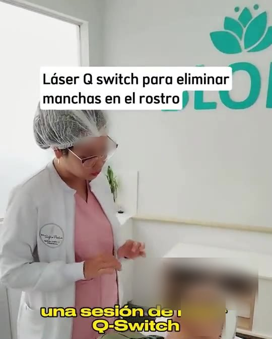
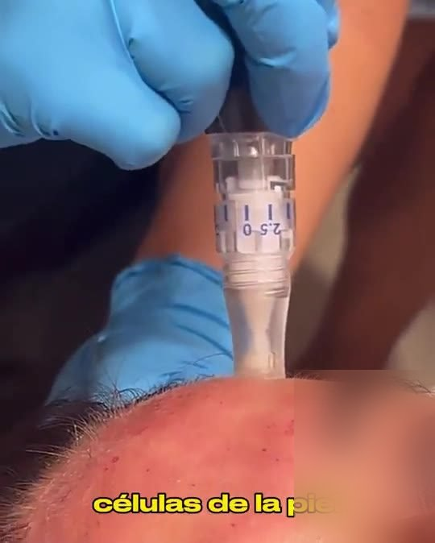

Láser para manchas en Lima
Manchas solares, melasma y manchas hormonales, con láser Q-Switch.
Promoción del mes activa Descúbrela →- Una sesión cada 30 días
- Protector solar diario
- La doctora define tus sesiones

Resultados reales
Pacientes de Blonda. Cada caso es distinto.

Promoción del mes · cupos limitados
Precio especial para Láser para manchas
S/✦✦✦✦
Te lo revelamos por WhatsApp en minutos, con tu plan según la zona.
- Sesión
- Paquete x3 sesiones
Evaluación médica descontable · cuotas sin intereses hasta 3 meses
¿Qué es?
El láser Q-Switch fragmenta el pigmento de la mancha para que el cuerpo lo elimine poco a poco. Se trabaja por sesiones, una cada 30 días.
Preguntas
¿Sirve para el melasma?
Sí, como parte de un tratamiento. El melasma puede volver con el sol, por eso el protector diario es clave.
¿Cuántas sesiones necesito?
Depende del tipo de mancha; en general se trabaja por paquetes de 3, una sesión cada 30 días.
Todo sobre Láser para manchas
¿Qué manchas trata?
Manchas solares, melasma, manchas hormonales y manchas que deja el acné.
¿Cómo funciona el láser Q-Switch?
Fragmenta el pigmento de la mancha para que el cuerpo lo elimine poco a poco. Las sesiones se hacen cada 30 días.
¿Qué cuidados necesito?
Protector solar todos los días: es parte del tratamiento y evita que las manchas vuelvan.
Cómo es el proceso
- EvaluaciónPresencial o virtual. Se descuenta de tu tratamiento.
- Separas tu fechaCon un abono, o en cuotas hasta 3 meses.
- ProcedimientoAmbulatorio, con anestesia local.
- SeguimientoControles y cuidados después.
También te puede interesar
Agenda tu evaluación
Evaluación médica presencial o virtual · se descuenta de tu tratamiento · promoción del mes